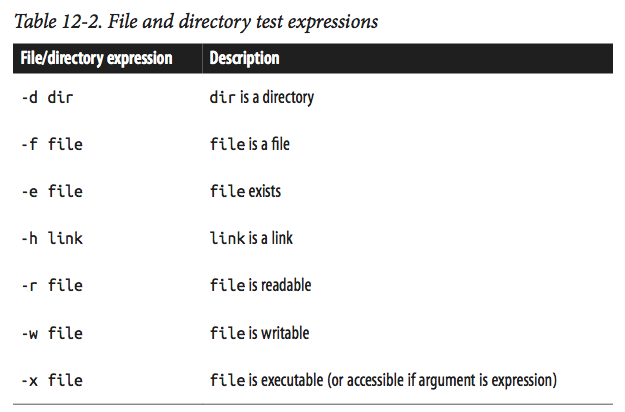

Shell Scripting, Writing Pipelines, and Parallelizing Tasks
Overview
Teaching: 100 min
Exercises: 20 minQuestions
How wto write Bash scripts?
Objectives
To be able to write simple scripts.
Note: The lesson is based on Chapter 12 of the Bioinformatics Data Skills by Vince Buffalo
Bioinformatics Shell Scripting, Writing Pipelines, and Parallelizing Tasks
In this lesson, we’ll learn the essential tools and skills to construct robust and
reproducible pipelines. We’ll see how to write rerunnable Bash shell scripts,
automate file-processing tasks with find and xargs, run pipelines in parallel,
and see a simple makefile.
Basic Bash Scripting
Bash, the shell we’ve used for this workshop, is also a full-fledged scripting language. Bash is explicitly designed to make running and interfacing command-line programs as simple as possible (a good characteristic of a shell!). It’s important to note that Python may be a more suitable language for commonly reused or advanced pipelines. Python is a more modern, more fully featured scripting language than Bash. Compared to Python, Bash lacks several nice features useful for data-processing scripts. However, Bash is often the best and quickest “duct tape” solution (which we often need in bioinformatics).
Writing and Running Robust Bash Scripts
Most Bash scripts in bioinformatics are simply commands organized into a re-runnable script with some added bells and whistles to check that files exist and ensuring any error causes the script to abort. These types of Bash scripts are quite simple to write: you’ve already learned important shell features like pipes, redirects, and background processes that play an important role in Bash scripts.
A robust Bash header
Anytime you write a Bash script, you should use the following Bash script header, which sets some Bash options that lead to more robust scripts:
#!/bin/bash
set -e
set -u
set -o pipefail
-
The first line is called the shebang, and indicates the path to the interpreter used to execute this script. Although shebang line is only required when running the script as a program, it’s best to include it.
-
set -etells the script to terminate if any command exited with a nonzero exit status. Note, however, that set -e has complex rules to accommodate cases when a nonzero exit status indicates “false” rather than failure. -
set -utells Bash scripts not to run any command containing a reference to an unset variable name (checkecho "rm $NOTSET/*.*". -
set -o pipefailis needed to cover one of the exceptions ofset -e: if the last program terminates with a nonzero status, the pipe will not be terminated.
These three options are the first layer of protection against Bash scripts with silent errors and unsafe behavior.
Running Bash scripts
Running Bash scripts can be done one of two ways: with the bash program directly (e.g.,
bash script.sh), or calling your script as a program (./script.sh). While we can run any
script (as long as it has read permissions) with bash script.sh, calling the script as
an executable requires that it have executable permissions. We can set these using:
chmod u+x script.sh. This adds executable permissions (+x) for the user who owns the
file (u).
Unlike other programming languages, Bash’s variables don’t have data types. It’s helpful to think of Bash’s variables as strings (but that may behave differently depending on context). We can create a variable and assign it a value with (note that spaces matter when setting Bash variables: do not use spaces around the equals sign!):
results_dir="results/"
To access a variable’s value, we use a dollar sign in front of the variable’s name (e.g., $results_dir). You can experiment with this in a Bash script, or directly on the command line:
results_dir="results/"
echo $results_dir
results/
Even though accessing a variable’s value using the dollar sign syntax works, in some cases it’s not clear where a variable name ends and where an adjacent string begins. To fix this, wrap the variable name in braces:
sample="CNTRL01A"
mkdir ${sample}_aln/
In addition, quoting variables makes your code more robust by preventing commands from interpreting any spaces or other special characters that the variable may contain:
sample="CNTRL01A"
mkdir "${sample}_aln/"
Variables and Command-line arguments
Let’s now look at how Bash handles command-line arguments (which are assigned to the value $1, $2, $3, etc.). The variable $0 stores the name of the script. We can see this ourselves with a simple example script:
echo '
#!/bin/bash
echo "script name: $0"
echo "first arg: $1"
echo "second arg: $2"
echo "third arg: $3" ' > args.sh
bash args.sh arg1 arg2 arg3
script name: args.sh
first arg: arg1
second arg: arg2
third arg: arg3
Bash assigns the number of command-line arguments to the variable $# (this does not count the script name, $0, as an argument). This is useful for user-friendly messages (this uses a Bash if conditional, which we’ll cover in more depth in the next section):
echo '
#!/bin/bash
if [ "$#" -lt 3 ] # are there less than 3 arguments?
then
echo "error: too few arguments, you provided $#, 3 required"
echo "usage: script.sh arg1 arg2 arg3"
exit 1
fi
echo "script name: $0"
echo "first arg: $1"
echo "second arg: $2"
echo "third arg: $3" ' > args.sh
bash args.sh arg1 arg2
error: too few arguments, you provided 2, 3 required
usage: script.sh arg1 arg2 arg3
Note, that variables created in your Bash script will only be available for the duration of the Bash process running that script. For example, running a script that creates a variable with some_var=3 will not create some_var in your current shell, as the script runs in an entirely separate shell process.
Conditionals in a Bash Script: if Statements
Like other scripting languages, Bash supports the standard if conditional statement. What makes Bash a bit unique is that a command’s exit status provides the true and false (remember: contrary to other languages, 0 represents true/success and anything else is false/failure). The basic syntax is:
if [commands] then
[if-statements]
else
[else-statements]
fi
were [commands] is a placeholder for any command, set of commands, pipeline, or test condition [if-statements] is a placeholder for all statements executed if [commands] evaluates to true (0). [else-statements] is a placeholder for all statements executed if [commands] evaluates to false (1). The else block is optional.
This is an advantage Bash has over Python when writing pipelines: Bash allows your scripts to directly work with command-line programs without requiring any overhead to call programs.
For example, suppose we wanted to run a set of commands only if a file contains a certain string. Because grep returns 0 only if it matches a pattern in a file and 1 otherwise, we could use:
echo `#!/bin/bash
if grep "pattern" some_file.txt > /dev/null
then
# commands to run if "pattern" is found
echo "found 'pattern' in 'some_file.txt"
fi`
The set of commands in an if condition can use all features of Unix we’ve mastered so far. For example, chaining commands with logical operators like && (logical AND) and || (logical OR):
#!/bin/bash
if grep "pattern" file_1.txt > /dev/null && grep "pattern" file_2.txt > /dev/null
then echo "found 'pattern' in 'file_1.txt' and in 'file_2.txt'"
fi
# We can also negate our program’s exit status with !:
# if ! grep "pattern" some_file.txt > /dev/null
# then echo "did not find 'pattern' in 'some_file.txt"
# fi
Finally, it’s possible to use pipelines in if condition statements. Note, however, that the
behavior depends on set -o pipefail. If pipefail is set, any nonzero exit status in a pipe in your
condition statement will cause skipping the if-statements section
(and going on to the else block if it exists).
test command.
The final component necessary to understand Bash’s if statements is the test command.
Like other programs, test exits with either 0 or 1. However test’s exit status indicates
the return value of the test specified through its arguments, rather than exit success or error.
test supports numerous standard comparison operators (whether two strings are equal, whether two
integers are equal, whether one integer is greater than or equal to another, etc.), which is
needed because ash can’t rely on familiar syntax such as > for “greater than,” as this is used
for redirection: instead, test has its own syntax (see Table 12-1 for a full list). You can get
a sense of how test works by playing with it directly on the command line (using ; echo “$?”
to print the exit status):
test "ATG" = "ATG" ; echo "$?"
test "ATG" = "atg" ; echo "$?"
test 3 -lt 1; echo "$?"
test 3 -le 3; echo "$?"
0
1
1
0
In practice, the most common tests are for whether files or directories exist and whether you can write to them. test supports numerous file- and directory- related test operations (the few that are most useful in bioinformatics are in Table 12-2). For examples:
test -d some_directory ; echo $? # is this a directory?
test -f some_file.txt ; echo $? # is this a file?
test -r some_file.txt ; echo $? $ is this file readable?
$

test is usually combined with if statements is simple:
if test -f some_file.txt
then [...]
fi
However, Bash provides a simpler syntactic alternative to the test statements: [ -f some_file.txt ] . Note that spaces around and within the brackets are required. This makes for much simpler if statements involving comparisons:
if [ -f some_file.txt ]
then [...]
fi
When using this syntax, we can chain test expressions with -a as logical AND, -o as logical OR, ! as negation, and parentheses to group statements. Our familiar && and || operators won’t work in test, because these are shell operators. As an example, suppose we want to ensure our script has enough arguments and that the input file is readable:
#!/bin/bash
set -e
set -u
set -o pipefail
if [ "$#" -ne 1 -o ! -r "$1" ]
then echo "usage: script.sh file_in.txt"
exit 1
fi
As discussed earlier, we quote variables (especially those from human input); this is a good practice and prevents issues with special characters.
Processing Files with Bash Using for Loops and Globbing
In bioinformatics, most of our data is split across multiple files and the same workflow to each of these files. Looping over files with Bash’s for loop is the simplest way to accomplish this.
There are three essential parts to creating a pipeline to process a set of files:
- Selecting which files to apply the commands to
- Looping over the data and applying the commands
- Keeping track of the names of any output files created
There are two common ways to select which files to apply a bioinformatics workflow to: approaches that start with a text file containing information about samples and approaches that select files in directories using some criteria.
In the first approach, you may have a file called samples.txt that tells you basic information about your raw data: sample name, read pair, and where the file is. Here’s an example (which is also in book’s chapter 12 directory on GitHub):
cat ./data/samples.txt
cat: ./data/samples.txt: No such file or directory
The first two columns are called metadata (data about data), which is vital to relating sample information to their physical files. Note that the metadata is also in the filename itself, which is useful because it allows us to extract it from the filename if we need to. We have to loop over these data, and do so in a way that keeps the samples straight. Suppose that we want to loop over every file, gather quality statistics on each and every file (using the imaginary program fastq_stat), and save this information to an output file. Each output file should have a name based on the input file.
First, we load our filenames into a Bash array, which we can then loop over. Bash arrays can be created manually specific elements can be extracted using:
sample_names=(zmaysA zmaysB zmaysC)
echo ${sample_names[0]}
echo ${sample_names[2]}
zmaysA
zmaysC
All elements can be extracted with the cryptic-looking echo ${sample_files[@]} and the number of
elements can be printed with echo ${#sample_names[@]}.
But creating Bash arrays by hand is tedious and error prone, especially because we already have our filenames in our sample.txt file. The beauty of Bash is that we can use a command substitution to construct Bash arrays (though this can be dangerous; see the following warning). Because we want to loop over each file, we need to extract the third column using cut -f 3 from samples.txt. Demonstrating this in the shell:
sample_files=($(cut -f 3 ./data/samples.txt))
echo ${sample_files[@]}
cut: ./data/samples.txt: No such file or directory
NOTE: this approach only works if our filenames only contain alphanumeric characters,
(_), and (-)! If spaces, tabs, newlines, or special characters like * end up in filenames,
it will break this approach. With our filenames in a Bash array, we’re almost ready to
loop over them. The last component is to strip the path and extension from each filename,
leaving us with the most basic filename we can use to create an output filename. The Unix
program basename strips paths from filenames:
basename seqs/zmaysA_R1.fastq
zmaysA_R1.fastq
basename can also strip a suffix (e.g., extension) provided as the second argument
from a filename (or alternatively using the argument -s):
basename -s .fastq seqs/zmaysA_R1.fastq
zmaysA_R1
Now, all the pieces are ready to construct our processing script:
#!/bin/bash
set -e
set -u
set -o pipefail
# specify the input samples file, where the third column is the path to each sample FASTQ file
sample_info=samples.txt
# create a Bash array from the third column of $sample_info
sample_files=($(cut -f 3 "$sample_info"))
for fastq_file in ${sample_files[@]}
do
# strip .fastq from each file, and add suffix "-stats.txt" to create an output filename
results_file="$(basename $fastq_file .fastq)-stats.txt"
# run fastq_stat on a file, writing results to the filename we've # above
fastq_stat $fastq_file > stats/$results_file
done
That’s all there is to it. A more refined script might add a few extra features, such as using an if statement to provide a friendly error if a FASTQ file does not exist or a call to echo to report which sample is currently being processed.
This script was easy to write because our processing steps took a single file as input, and created a single file as output. However, many bioinformatics pipelines combine two or more input files into a single output file. Aligning paired-end reads is a prime example: most aligners take two input FASTQ files and return one output alignment file. Suppose that we use the aligner BWA and our genome reference is named zmays_AGPv3.20.fa:
#!/bin/bash
set -e
set -u
set -o pipefail
# specify the input samples file, where the third column is the path to each sample FASTQ file
sample_info=samples.txt
# our reference
reference=zmays_AGPv3.20.fa
# create a Bash array from the first column, which are
# sample names. Because there are duplicate sample names
# (one for each read pair), we call uniq
sample_names=($(cut -f 1 "$sample_info" | uniq))
for sample in ${sample_names[@]} do
# create an output file from the sample name
results_file="${sample}.sam"
bwa mem $reference ${sample}_R1.fastq ${sample}_R2.fastq > $results_file
done
Here we use cut to grab the first column (corresponding to sample names), and pipe these sample names to uniq to remove diplicates (first column repeats each sample name twice, once for each paired-end file). As before, we create an output filename for the current sample being iterated over. In this case, all that’s needed is the sample name stored in $sample. Our call to bwa provides the reference, and the two paired-end FASTQ files for this sample a s input. Finally, the output of bwa is redirected to $results_file.
Finally, in some cases it might be easier to directly loop over files, rather than working a file containing sample information like samples.txt. The easiest (and safest) way to do this is to use Bash’s wildcards to glob files to loop over. The syntax of this is quite easy:
#!/bin/bash set -e
set -u
set -o pipefail
for file in *.fastq
do
echo "$file: " $(bioawk -c fastx 'END {print NR}' $file)
done
Bash’s loops are a handy way of applying commands to numerous files, but have a
few downsides. First, compared to the Unix tool find (which we see in the next
section), globbing is not a very powerful way to select certain files. Second,
Bash’s loop syntax is lengthy for simple operations, and a bit archaic.
Finally, there’s no easy way to parallelize Bash loops in a way that constrains
the number of subprocesses used. We’ll see a powerful file-processing Unix idiom
in the next section that works better for some tasks where Bash scripts may not be optimal.
Automating File-Processing with find and xargs
In this section, we’ll learn about a more powerful way to specify files matching
some criteria using Unix find. We’ll also see how files printed by find can be
passed to another tool called xargs to create powerful Unix-based processing workflows.
Using find and xargs
First, let’s look at some common shell problems that find and xargs solve. Suppose
you have a program named process_fq that takes multiple filenames through standard in
to process. If you wanted to run this program on all files with the suffix .fq, you might run:
| ls *.fq | process_fq |
Your shell expands this wildcard to all matching files in the current directory, and ls prints these filenames. Unfortunately, this leads to a common complication that makes ls and wildcards a fragile solution. Suppose your directory contains a filename called treatment 02.fq. In this case, ls returns treatment 02.fq along with other files. However, because files are separated by spaces, and this file contains a space, process_fq will interpret treatment 02.fq as two separate files, named treatment and 02.fq. This problem crops up periodically in different ways, and it’s necessary to be aware of when writing file-processing pipelines. Note that this does not occur with file globbing in arguments—if process_fq takes multiple files as arguments, your shell handles this properly:
process_fq *.fq
Error in eval(expr, envir, enclos): object 'process_fq' not found
Here, your shell automatically escapes the space in the filename treatment 02.fq, so process_fq will correctly receive the arguments treatment-01.fq, treatment 02.fq, treatment-03.fq. The potentential problem here is that there’s a limit to the number of files that can be specified as arguments. The limit is high, but you can reach it with NGS data. In this case you may get a meassage:
Finding Files with find
The basic syntax for find is find path expression. Path specifies the starting directory for search. Expressions are how we describe which files we want find to return.
Unlike ls, find is recursive (it will search through the directory structure).
In fact, running find on a directory (without other arguments) is a quick way to
see it’s structure, e.g.,
find ../2018-workshop | head #I limited the number of files displayed with `head`
find: ../2018-workshop: No such file or directory
Argument -maxdepth limits the depth of the search: to search only within the
current directory, use find -maxdepth 1 .
For the following exercises, I’ll create a small directory system in my current directory:
mkdir -p zmays-snps/{data/seqs,scripts,analysis}
touch zmays-snps/data/seqs/zmays{A,B,C}_R{1,2}.fastq
find zmays-snps
zmays-snps
zmays-snps/analysis
zmays-snps/data
zmays-snps/data/seqs
zmays-snps/data/seqs/zmaysA_R1.fastq
zmays-snps/data/seqs/zmaysA_R2.fastq
zmays-snps/data/seqs/zmaysB_R1.fastq
zmays-snps/data/seqs/zmaysB_R2.fastq
zmays-snps/data/seqs/zmaysC_R1.fastq
zmays-snps/data/seqs/zmaysC_R2.fastq
zmays-snps/scripts
Find expressions
Find’s expressions are built from predicates, which are chained together by logical AND and OR operators. Through expressions, find can match files based on conditions such as creation time or the permissions of the file, as well as advanced combinations of these conditions.
For example, we can use find to print the names of all files matching the pattern
“zmaysB*fastq” (e.g., FASTQ files from sample “B”, both read pairs):
find zmays-snps/data/seqs -name "zmaysB*fastq"
zmays-snps/data/seqs/zmaysB_R1.fastq
zmays-snps/data/seqs/zmaysB_R2.fastq
This gives similar results to ls zmaysB*fastq, as we’d expect. The primary difference is
that find reports results separated by newlines and, by default, find is recursive.
Because we only want to return FASTQ files (and not directories with that matching name), we might want to limit our results using the -type option:
find zmays-snps/data/seqs -name "zmaysB*fastq" -type f
There are numerous different types you can search for; the most commonly used are f for files, d for directories, and l for links.
By default, find connects different parts of an expression with logical AND. The find command in
this case returns results where the name matches “zmaysB*fastq” and is a file (type “f ”). find
also allows explicitly connecting different parts of an expression with different operators.
If we want to get the names of all FASTQ files from samples A or C, we’ll use the operator -or to chain expressions:
find zmays-snps/data/seqs -name "zmaysA*fastq" -or -name "zmaysC*fastq" -type f
zmays-snps/data/seqs/zmaysA_R1.fastq
zmays-snps/data/seqs/zmaysA_R2.fastq
zmays-snps/data/seqs/zmaysC_R1.fastq
zmays-snps/data/seqs/zmaysC_R2.fastq
Another way to select these files is with negation:
find zmays-snps/data/seqs -type f "!" -name "zmaysC*fastq"
zmays-snps/data/seqs/zmaysA_R1.fastq
zmays-snps/data/seqs/zmaysA_R2.fastq
zmays-snps/data/seqs/zmaysB_R1.fastq
zmays-snps/data/seqs/zmaysB_R2.fastq
Let’s see another example. Suppose a file named zmaysB_R1-temp.fastq was created by your colleague in zmays-snps/data/seqs but you want to ignore it in your file querying:
touch zmays-snps/data/seqs/zmaysB_R1-temp.fastq
find zmays-snps/data/seqs -type f "!" -name "zmaysC*fastq" -and "!" -name "*-temp*"
zmays-snps/data/seqs/zmaysA_R1.fastq
zmays-snps/data/seqs/zmaysA_R2.fastq
zmays-snps/data/seqs/zmaysB_R1.fastq
zmays-snps/data/seqs/zmaysB_R2.fastq
Note that find’s operators like !, (, and ) should be quoted so as to avoid your shell from interpreting these.
Find’s -exec: Running Commands on find’s Results
Find’s real strength in bioinformatics is that it allows you to run commands on each of the files find returns, using -exec option.
Continuing from our last example, suppose that a messy collaborator created numerous temporary files. Let’s emulate this (in the zmays-snps/data/seqs directory):
touch zmays-snps/data/seqs/zmays{A,C}_R{1,2}-temp.fastq
ls zmays-snps/data/seqs
zmaysA_R1-temp.fastq
zmaysA_R1.fastq
zmaysA_R2-temp.fastq
zmaysA_R2.fastq
zmaysB_R1-temp.fastq
zmaysB_R1.fastq
zmaysB_R2.fastq
zmaysC_R1-temp.fastq
zmaysC_R1.fastq
zmaysC_R2-temp.fastq
zmaysC_R2.fastq
Although we can delete these files with rm *-temp.fastq, using rm with a wildcard
in a directory filled with important data files is too risky. Using find’s -exec is a
much safer way to delete these files.
For example, let’s use find - exec and rm to delete these temporary files:
find zmays-snps/data/seqs -name "*-temp.fastq" -exec rm {} \;
Notice the (required!) semicolumn and curly brackets at the end of the command!
In one line, we’re able to pragmatically identify and execute a command on files that match a certain pattern. With find and -exec, a daunting task like processing a directory of 100,000 text files with a program is simple.
In general, find - exec is most appropriate for quick, simple tasks
(like deleting files, changing permissions, etc.). For larger tasks, xargs
(which we’ll see next) is a better choice.
xargs: A Unix Powertool
xargs allows us to take input passed to it from standard in, and use this
input as arguments to another program, which allows us to build commands
programmatically. Using find with xargs is much like find -exec, but
with some added advantages that make xargs a better choice for larger tasks.
Let’s re-create our messy temporary file directory example again:
touch zmays-snps/data/seqs/zmays{A,C}_R{1,2}-temp.fastq
ls zmays-snps/data/seqs
zmaysA_R1-temp.fastq
zmaysA_R1.fastq
zmaysA_R2-temp.fastq
zmaysA_R2.fastq
zmaysB_R1.fastq
zmaysB_R2.fastq
zmaysC_R1-temp.fastq
zmaysC_R1.fastq
zmaysC_R2-temp.fastq
zmaysC_R2.fastq
xargs works by taking input from standard in and splitting it by spaces, tabs,
and newlines into arguments. Then, these arguments are passed to the command supplied.
For example, to emulate the behavior of find -exec with rm, we use xargs with rm:
find zmays-snps/data/seqs -name "*-temp.fastq"
find zmays-snps/data/seqs -name "*-temp.fastq" | xargs rm
zmays-snps/data/seqs/zmaysA_R1-temp.fastq
zmays-snps/data/seqs/zmaysA_R2-temp.fastq
zmays-snps/data/seqs/zmaysC_R1-temp.fastq
zmays-snps/data/seqs/zmaysC_R2-temp.fastq
xargs passes all arguments received through standard in to the supplied program
(rm in this example). This works well for programs like rm, touch, mkdir, and
others that take multiple arguments. However, other programs only take a single argument
at a time. We can set how many arguments are passed to each command call with xargs’s -n
argument. For example, we could call rm four separate times (each on one file) with:
touch zmays-snps/data/seqs/zmays{A,C}_R{1,2}-temp.fastq
find zmays-snps/data/seqs -name "*-temp.fastq" | xargs -n 1 rm
One big benefit of xargs is that it separates the process that specifies
the files to operate on (find) from applying a command to these files (through xargs).
If we wanted to inspect a long list of files find returns before running rm on all
files in this list, we could use:
touch zmays-snps/data/seqs/zmays{A,C}_R{1,2}-temp.fastq
find zmays-snps/data/seqs -name "*-temp.fastq" > files-to-delete.txt
cat files-to-delete.txt
cat files-to-delete.txt | xargs rm
Using xargs with Replacement Strings to Apply Commands to Files
So far, we used xargs to build commands purely by adding arguments to the end
of the command supplied. xargs’s -I option allows more fine-grained placement of
arguments into a command by replacing all instances of a placeholder string ({}) with
a single argument. Suppose an imaginary program fastq_stat takes an input file through
the option –in, gathers FASTQ statistics information, and then writes a summary to the
file specified by the –out option. We may want our output filenames to be paired with
our input filenames and have corresponding names. We can tackle this with find, xargs,
and basename:
find . -name "*.fastq" | xargs basename -s ".fastq" | xargs -I{} fastq_stat --in {}.fastq --out ../summaries/{}.txt
## Notice that the BSD xargs will only replace up to five instances of the string specified
## by -I by default, unless more are set with -R.
Combining xargs with basename is a powerful idiom used to apply commands to many files
in a way that keeps track of which output file was created by a particular input file.
While we could accomplish this other ways, xargs allows for very quick and incremental
command building. xargs has another very large advantage over for loops: it allows
parallelization over a prespecified number of processes.
xargs and Parallelization
An incredibly powerful feature of xargs is that it can launch a limited number of processes in parallel. This is one of xargs’s strengths over Bash’s for loops. Although we can launch multiple background processes with Bash for loops by adding the ampersand (&) at the end of the command (e.g., for filename in *.fastq; do program “$filename” & done), this will launch as many processess as there are files we are looping over!
xargs allows us to define the number of processes to run simultaneously with
the -P
find . -name "*.fastq" | xargs basename -s ".fastq" | xargs -P 6 -I{} fastq_stat --in {}.fastq --out ../summaries/{}.txt
## Notice that the BSD xargs will only replace up to five instances of the string specified
## by -I by default, unless more are set with -R.
Admittedly, the price of some powerful xargs workflows is complexity. If you find yourself using xargs mostly to parallelize tasks or you’re writing complicated xargs commands that use basename, it may be worthwhile to learn GNU Parallel. GNU Parallel extends and enhances xargs’s functionality, and fixes several limitations of xargs. For example, GNU parallel can handle redirects in commands, and has a shortcut ({/.}) to extract the base filename without basename. This allows for very short, powerful commands:
find . -name "*.fastq" | parallel --max-procs=6 'program {/.} > {/.}-out.txt'
GNU Parallel has numerous other options and features. If you find yourself using xargs frequently for complicated workflows, I’d recommend learning more about GNU Parallel. The GNU Parallel website has numerous examples and a detailed tutorial.
Key Points
Don’t forget the proper header in your scripts